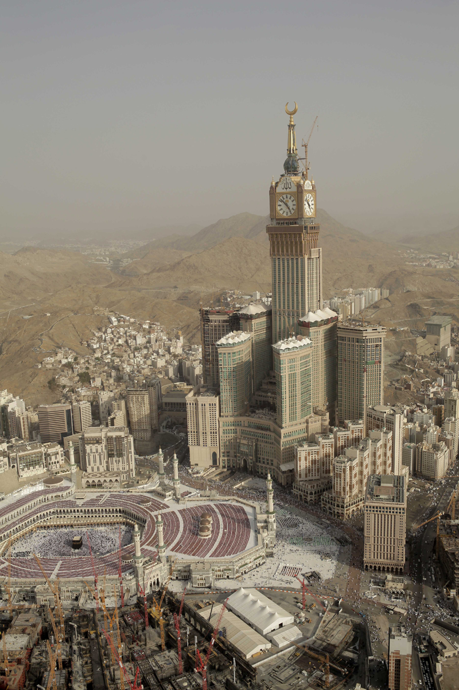

Skyscrapers are very tall buildings that are usually found in big cities and represent modern engineering and architectural achievements. Over the years, many countries have competed to build the tallest skyscrapers in the world. These buildings are not only offices or living spaces, but also important landmarks and symbols of technological progress.
| Name | Country | Height | Built |
|---|---|---|---|
| Burj Khalifa | UAE | 828 M | 2010 |
| Shanghai Tower | China | 632 M | 2015 |
| Makkah Royal Clock Tower | Saudi Arabia | 601 M | 2012 |
The tallest skyscraper in the world is Burj Khalifa in Dubai, which is 828 meters tall and was completed in 2010. The second tallest is Shanghai Tower in China with a height of 632 meters, built in 2015. Makkah Royal Clock Tower in Saudi Arabia stands 601 meters tall and was completed in 2012. Ping An Finance Centre in China has a height of 599 meters and was built in 2017. Finally, Lotte World Tower in South Korea is 555 meters tall and was completed in 2016.
Share use what do You think about our Website?